Українські письменники-фантасти
Профілі тринадцяти українських письменників-фантастів — від технокомуністичних ентузіастів 1920-х до пізньорадянських постмодерністів і покоління після 1991 року: біографії, ключові твори та місце в історії жанру.
Тринадцять письменників
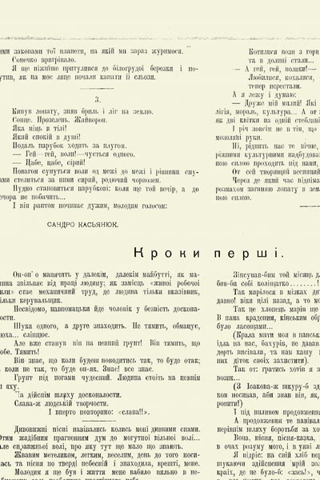
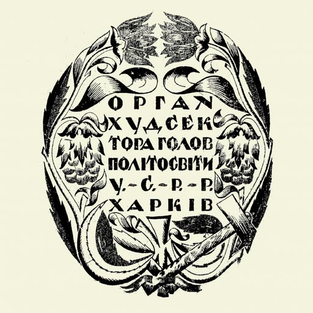
Заводський робітник харківської «Електросили», що став першим відомим українським письменником-фантастом і оспівував машини як живих товаришів пролетаріату.
Читати біографію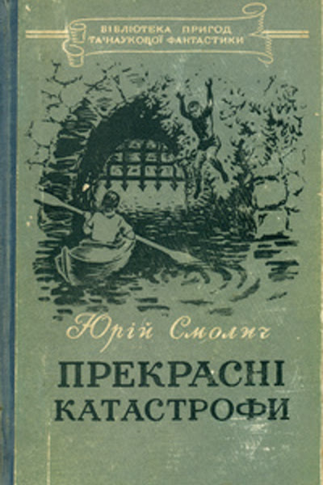
Харківський прозаїк, який трилогією «Прекрасні катастрофи» заклав основи української наукової фантастики — і водночас десятиліттями був завербованим інформатором НКВС/КДБ.
Читати біографію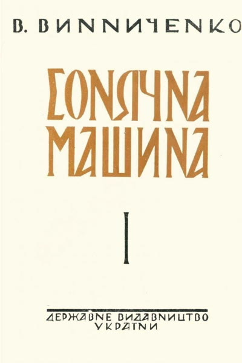
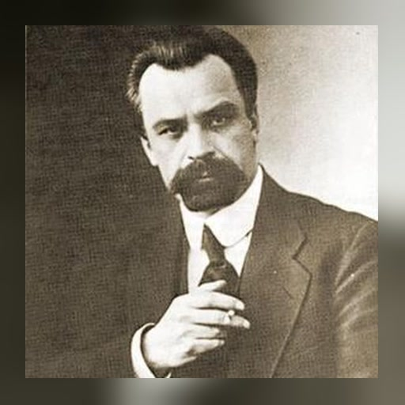
Очільник першого українського уряду ХХ століття, який двічі втрачав владу й переплавив власне політичне розчарування в техноутопічний роман «Сонячна машина» (1928).
Читати біографію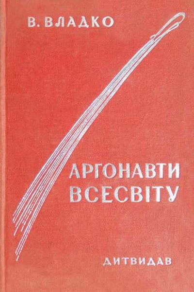
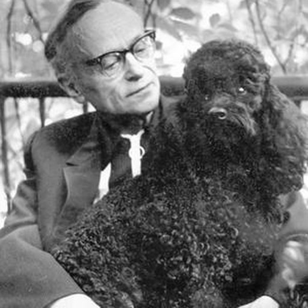
Перший жанровий спеціаліст української наукової фантастики — «український Жюль Верн» — чиї «Аргонавти Всесвіту» відправили радянський екіпаж на Венеру.
Читати біографію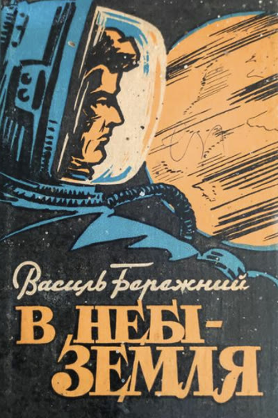
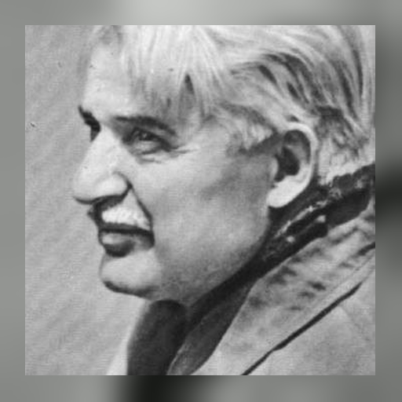
Журналіст, ветеран війни та плідний автор НФ-романів, чий дебют «У зоряні світи» (1956) розійшовся тиражем 165 000 примірників — провідна постать радянської української космічної фантастики.
Читати біографію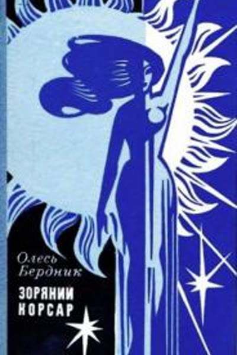
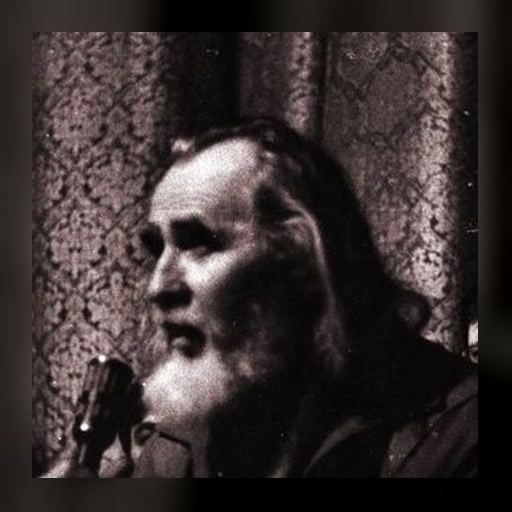
В'язень таборів, співзасновник Гельсінської групи та «хіпі-косміст», чий бестселер «Зоряний корсар» (1971) остаточно розірвав із радянською техноутопією.
Читати біографію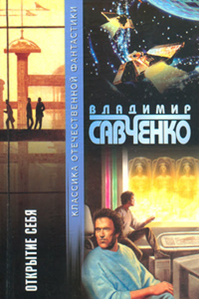
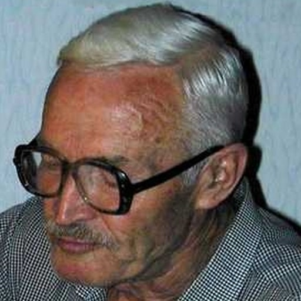
Інженер, що став письменником; його «Відкриття себе» (1967) порушило теми клонування й ідентичності за десятиліття до того, як до них дійшла західна філософія.
Читати біографію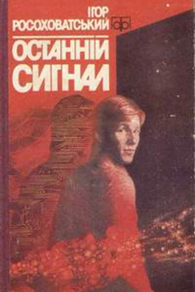
Науковий журналіст, який вигадав «сигомів» — синтетичних постлюдей — і першим в українській фантастиці всерйоз заговорив про машинну етику та узгодження цілей ШІ.
Читати біографію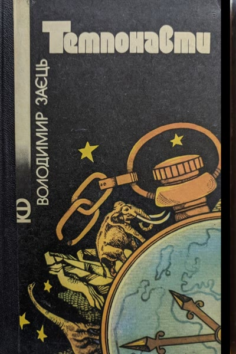
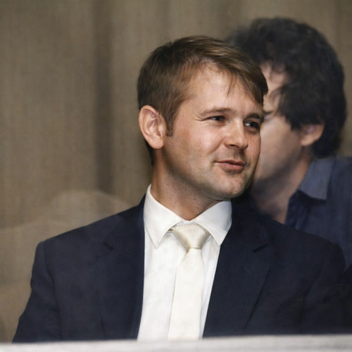
Вдень — педіатр, вночі — письменник-сатирик: майстер несподіваних сюжетних поворотів і філософських парадоксів. Загинув за загадкових обставин у Ємені.
Читати біографію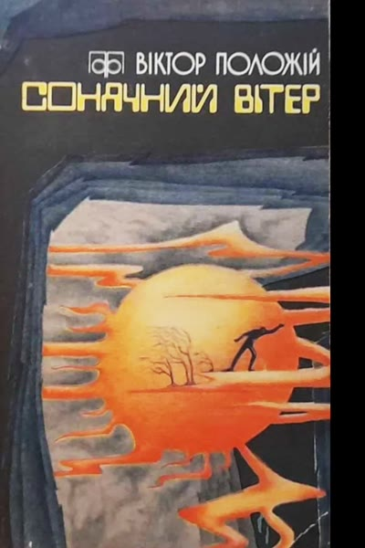
Філолог, літературний критик і письменник-фантаст, чия збірка «Сонячний вітер» втілює Золоту добу української НФ — парадоксальну, гумористичну та глибоко філософську.
Читати біографію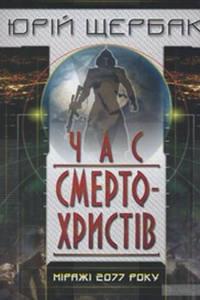
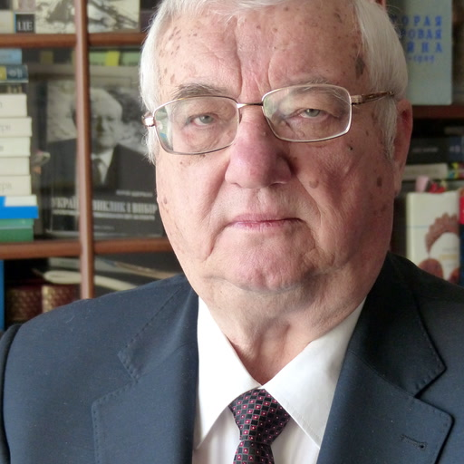
Лікар, еколог часів Чорнобиля та посол на чотирьох континентах, який повернувся до прози на восьмому десятку з дистопійною трилогією про близьке майбутнє.
Читати біографію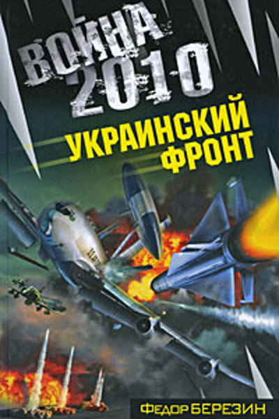
Колишній радянський офіцер-ракетник, чиї романи про «війну майбутнього» стали репетицією війни на Донбасі за кілька років до 2014-го, коли він сам до неї долучився.
Читати біографію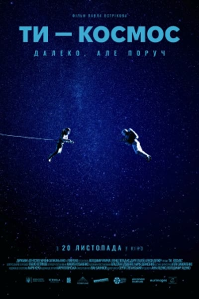
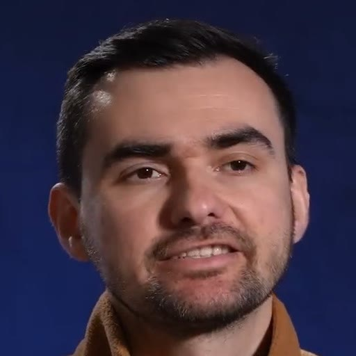
Режисер фільму «U Are the Universe» (2024), українсько-бельгійської космічної мелодрами, що коливається між іронією та щирістю — наймолодший і найбільш метамодерний голос української фантастики.
Читати біографіюСтоліття української наукової фантастики
Фантастика 1920–30-х пропагувала технокомунізм — переконання, що сама лише техніка принесе безкласовий рай. Сандро Касянюк зробив машини товаришами пролетаріату; Юрій Смолич дав жанрові першу серйозну трилогію, водночас доносячи на колег; Володимир Винниченко, пишучи у вигнанні після двох поразок при владі, подарував людству достаток — і запитав, що люди насправді з ним роблять.
У 1940–50-х українська НФ звузилася до того, що радянська критика сама називала «фантастикою ближнього прицілу». Василь Бережний був найпопулярнішим її представником — і саме його шлях став найяскравішим свідченням вичерпання технокомунізму, завершившись через тридцять років гіркою іронією.
1960-ті дали два протилежні виходи з однієї кризи. Олесь Бердник відповів містичним націоналізмом — місцевим різновидом хіпі-космізму, що постав майже без контактів із Заходом; Володимир Савченко — аналітичним скептицизмом, порушивши питання ідентичності та машинної суб'єктності на десятиліття раніше за Захід. Ігор Росоховатський тим часом створив цикл про синтетичних істот, які здатні мислити всупереч зіпсованим настановам творців.
1970–80-ті принесли Золоту добу, вільнішу від нав'язливої пропаганди. Володимир Заєць, педіатр за фахом, оком клініциста діагностував, як вихолощуються радянські ієрархії, і самотужки дійшов до постмодерних прийомів, не прочитавши жодної теоретичної праці; Віктор Положій, працівник кіностудії імені Довженка, проносив екзистенціалістські мотиви в позірно ортодоксальну прозу.
Після 1991 року жанр відкрився світові. Юрій Щербак, спираючись на десятиліття життя лікаря, еколога й посла, написав геополітичну дистопію; романи Федора Березіна про «війну майбутнього» стали репетицією його власної ролі у війні на Донбасі; а фільм Павла Острікова «Ти — космос» (2024) приніс метамодерну чутливість, що коливається між іронією та щирістю, не обираючи жодної. За століття українська НФ повторила долю самого позитивізму — від науки як релігії, що обіцяє щастя, до науки як інструмента, вартість якого залежить від того, хто його тримає.